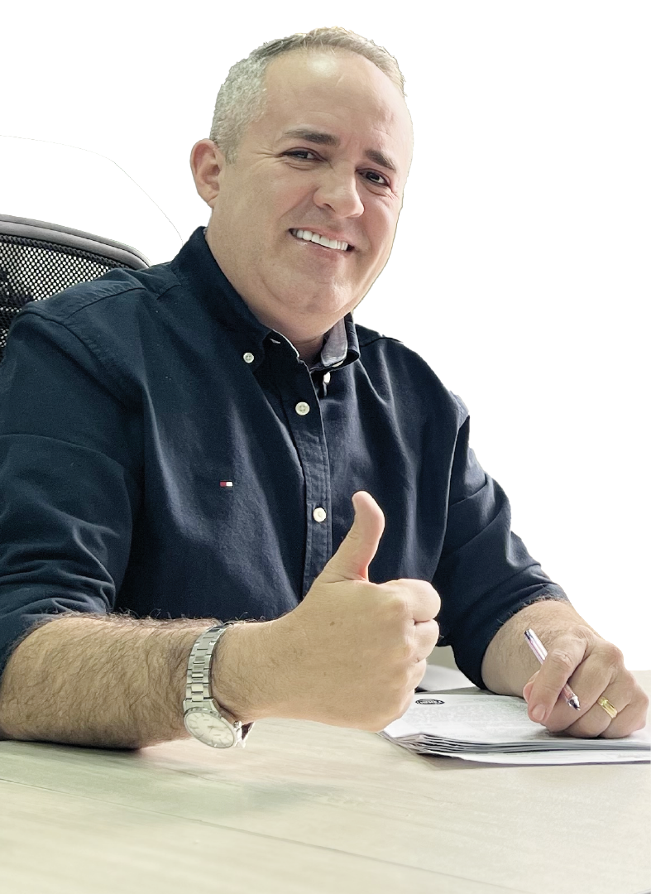

Del barrio Gualandayes de Envigado al máximo cargo legislativo de Antioquia. Un hombre hecho a pulso, que hoy representa a más de 125 municipios.
"Insistir, persistir y nunca desistir."

Un hijo de la clase trabajadora antioqueña que aprendió el valor del trabajo antes que el de la política.
trabajando en el sector privado antes de llegar a la política. Empezó entregando domicilios y terminó coordinando un equipo completo. Eso es lo que lo diferencia.
"Querer es poder. Yo no llegué aquí gracias a ningún apellido — llegué gracias al trabajo y a la gente." — Juan Carlos Palacio Fernández
Abogado más Especialista en Alta Gerencia. Una combinación poco común que define su forma de hacer política: con ley y con números.
Una trayectoria construida ladrillo a ladrillo, sin herencias políticas ni padrinos de élite. Solo trabajo, constancia y territorio.
De 623 votos en su primer intento a más de 41.000. Un crecimiento sin precedentes en el sur del Valle de Aburrá.
veces más votos obtuvo en 2019 comparado con 2015. El salto electoral más dramático de su carrera y uno de los más importantes en la historia política reciente del sur de Antioquia.
No basta con llegar al poder. Aquí están las ordenanzas y proyectos con su firma que impactan la vida de todos los antioqueños.
Porque el servicio no termina cuando se cierra la sesión. Juan Carlos y Deiby Betancourt crearon una fundación que trabaja donde el Estado no siempre llega.
Envigado y municipios del Suroeste antioqueño. La fundación entiende que el bienestar de Envigado no puede ser sostenible si sus regiones vecinas sufren carencias extremas.
"Insistir,
persistir
y nunca desistir." — Juan Carlos Palacio Fernández
Presidente · Asamblea Departamental de Antioquia · 2026
Síguelo en sus plataformas oficiales y conoce de primera mano su trabajo diario en la Asamblea y en el territorio.
FOCO tiene convocatorias permanentes de voluntariado juvenil. Escríbeles directamente por sus redes para unirte a las brigadas barriales, el acompañamiento a adultos mayores o la protección animal.